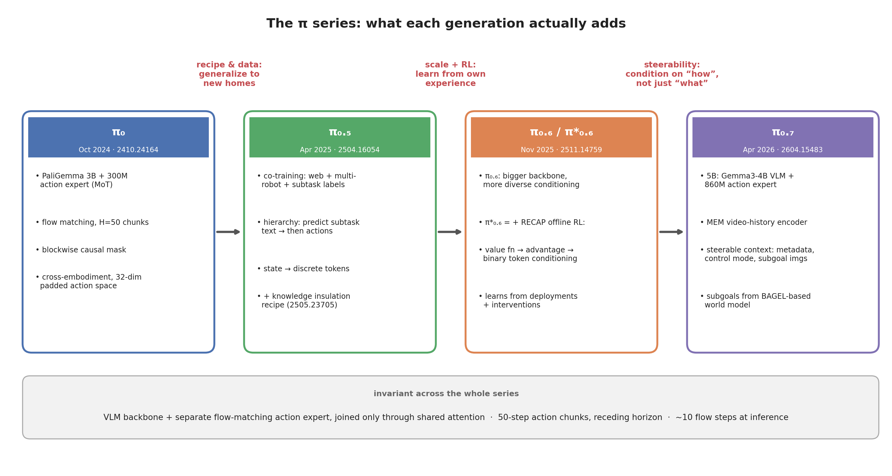
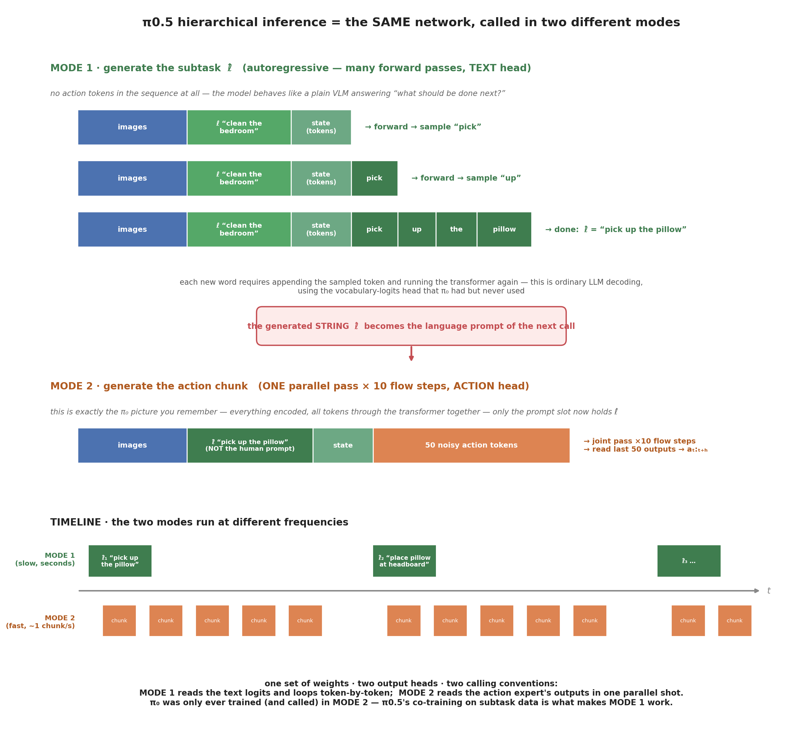
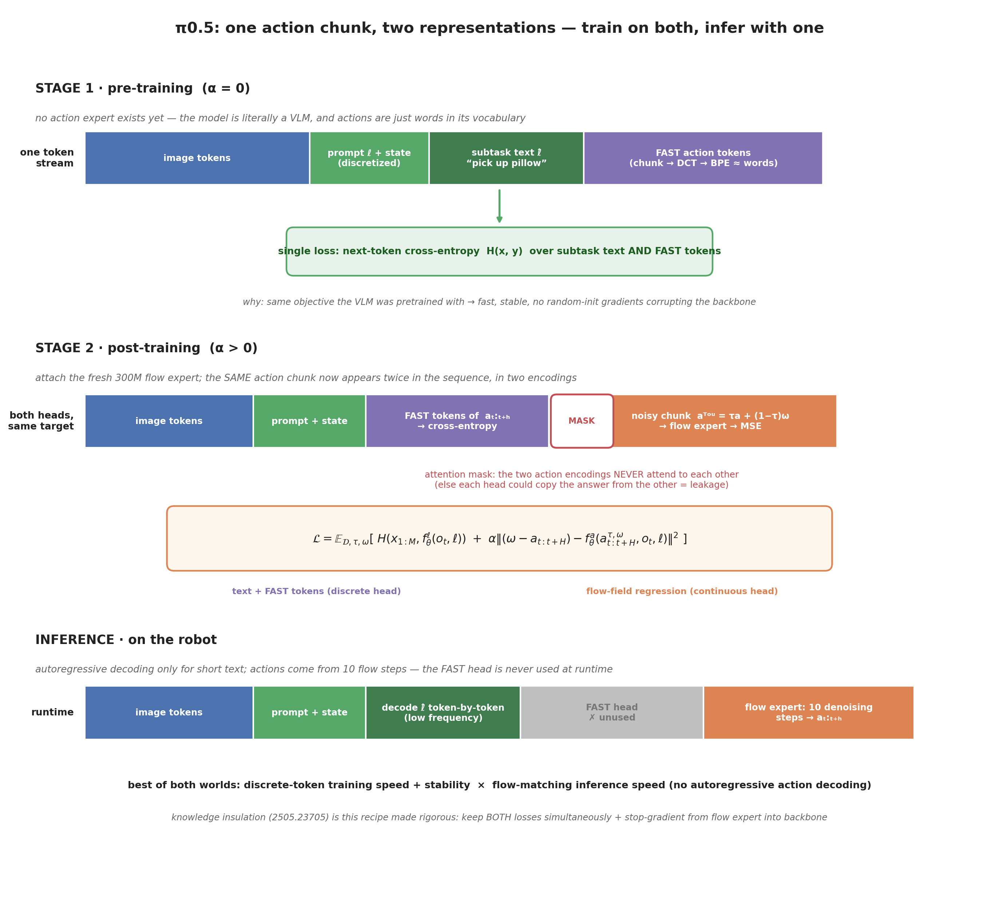
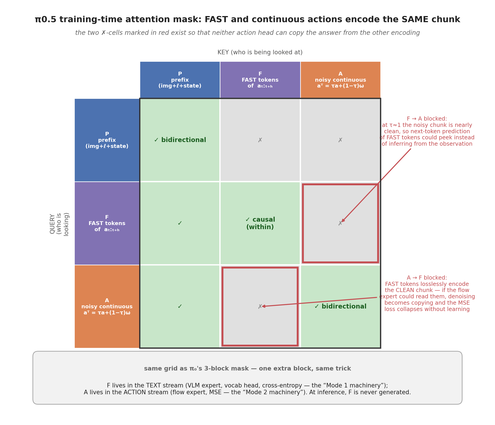
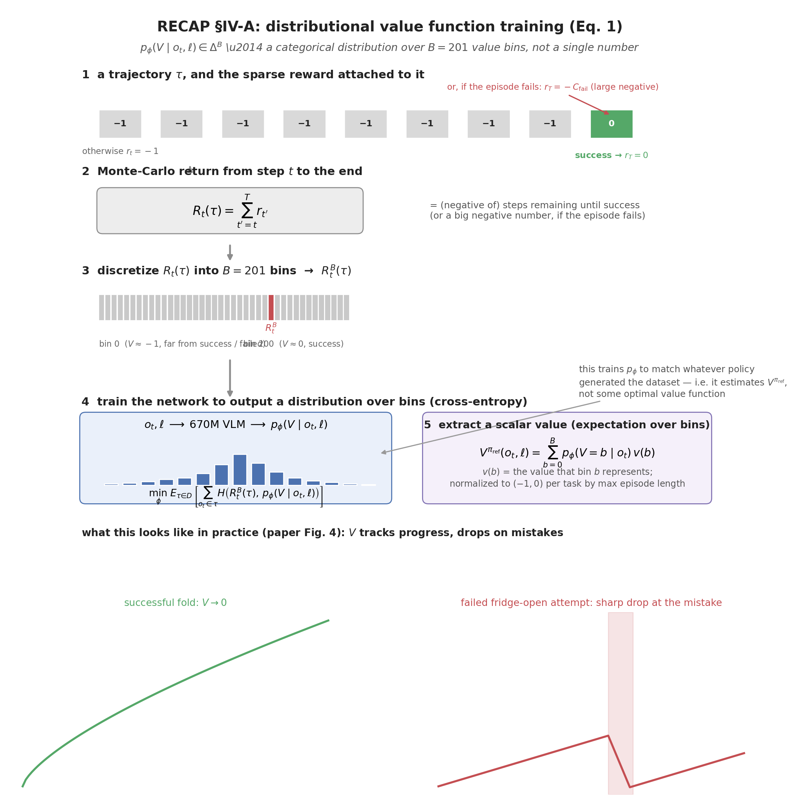
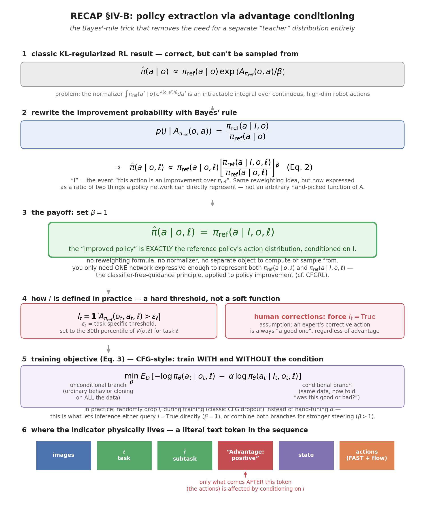

The π series: π0.5 → π0.6 → π0.7¶

At a glance¶
| Model | Date / arXiv | The one new thing | Read for |
|---|---|---|---|
| π₀ | Oct 2024 · 2410.24164 | VLM + flow-matching action expert, joined only via shared attention | architecture (my deep note) |
| π0.5 | Apr 2025 · 2504.16054 | co-training recipe + subtask hierarchy → new homes | data & generalization |
| π0.6 / π*0.6 | Nov 2025 · 2511.14759 | RECAP: offline RL via advantage conditioning → learn from deployments | RL without policy gradients |
| π0.7 | Apr 2026 · 2604.15483 | steerable context conditioning (metadata, subgoal images, history) | scaling & emergence |
Invariant across all four: VLM backbone + separate flow-matching action expert sharing only attention; 50-step action chunks with receding horizon; ~10 flow steps at inference. The generative machinery froze at π₀ — everything since is data, recipe, and conditioning.
1. π0.5 — open-world generalization via co-training¶
- Citation: Black et al. (Physical Intelligence), π0.5: a Vision-Language-Action Model with Open-World Generalization. arXiv 2504.16054 · pdf
Claim: co-training on heterogeneous tasks (multi-robot data, web data, object detection, subtask prediction) lets one end-to-end system clean kitchens and bedrooms in entirely new homes — 10–15 minute tasks from a single high-level prompt.
What's new vs π₀ (the delta):
- Data, overwhelmingly: 97.6% of first-phase training data is not mobile-manipulator household data — it's other robots, web data, and auxiliary tasks. The generalization claim rests on this transfer.
- Hierarchy in one model: at each inference step the model first predicts a semantic subtask as text ("pick up the cutting board"), then predicts the action chunk conditioned on it. High level and low level share one network.
- Architecture tweaks (both already documented in my π₀ note): the state vector moves from a continuous suffix token into discrete language tokens in the prefix, and timestep conditioning becomes AdaRMSNorm instead of concat+MLP.
- Training recipe: the released checkpoints use knowledge insulation (2505.23705) — backbone learns from discrete FAST action tokens, flow-expert gradients are stopped. This is fix #5 in my embodiment tax map.
How hierarchical inference actually works (Sec. IV + App. E)¶
The factorization \(\pi_\theta(a,\hat\ell\mid o,\ell)=\pi_\theta(a\mid o,\hat\ell)\,\pi_\theta(\hat\ell\mid o,\ell)\) is one model, same weights, called twice with different output heads. The transformer's outputs are split: the first \(M\) positions are ordinary text-token logits, the last \(H\) positions go through the action expert (same 300M expert as π₀) to a linear flow-field projection.
- Call 1 — sample \(\hat\ell\sim\pi_\theta(\hat\ell\mid o,\ell)\), low frequency. Input: images + high-level prompt \(\ell\) ("clean the bedroom") + tokenized state. Plain autoregressive text decoding produces the subtask string ("pick up the pillow"). Nothing special mechanically — it's the VLM doing what VLMs do, taught by the subtask-prediction (HL) co-training data.
- Call 2 — sample \(a\sim\pi_\theta(a\mid o,\hat\ell)\), high frequency. Input: images + \(\hat\ell\) as the language prompt (the low level sees \(\hat\ell\), not \(\ell\)) + state + 50 noisy action tokens. Ten flow-matching steps → action chunk, receding horizon — identical to the π₀ inference loop in my π₀ note.
So "hierarchy" = the model writes its own intermediate judgment as text, then feeds that text back into its own context before acting — the paper itself frames it as chain-of-thought, not planner+executor. Unlike embodied-CoT methods, the high level runs at a lower frequency than the low level (the subtask persists across many chunks).

Precision — reconciling this with the π₀ mental model. In π₀, my picture was: encode everything (prefix + suffix), push all 867 tokens through the transformer together in one parallel pass, read the action outputs. That picture is still exactly right — but it describes only Mode 2. A transformer has no fixed calling convention: the same weights can also be run the way every LLM is run — no action tokens in the sequence at all, forward pass, sample one word from the text logits, append it, forward again (Mode 1). π₀'s PaliGemma backbone always had that text head; π₀ just never trained or called it. π0.5's subtask co-training is what makes Mode 1 produce something useful, and hierarchical inference is nothing more than: run Mode 1 until the sentence ends, paste the resulting string into the prompt slot, then run Mode 2 as usual.
Precision — what happens to "shared attention" in Mode 1. Nothing is switched off; there is simply nothing to share. The attention layer takes a per-expert list of token arrays and concatenates their Q/K/V along the sequence axis — in Mode 1 the action expert's entry is empty, so the concatenation degenerates to the VLM expert's ordinary single-stream self-attention, and the action expert's 300M parameters are never executed at all (no input is ever fed to them). Mode 1's per-step forward is computationally the same pass as π₀'s prefix-only KV-cache-filling pass in sample_actions — the only difference is what gets read out: π₀ keeps the KV cache and discards the logits; π0.5 reads the logits and samples a word.
| Tokens in sequence | Weights running | Attention shape | Output read | |
|---|---|---|---|---|
| Mode 1 (subtask \(\hat\ell\)) | prefix-type only (images/text/state) | VLM expert only | single-stream self-attention | vocab logits, word by word |
| Mode 2 (actions) | prefix + 50 noisy actions | VLM + action expert | genuine two-expert shared attention | action expert's last 50 outputs |
while task_not_done:
# MODE 1 — text: many sequential forwards, read VOCAB logits, no action tokens
seq = [images, prompt_l, state_tokens]
l_hat = []
while not end_of_sentence:
logits = f_theta(seq + l_hat) # full forward pass
l_hat.append(sample(logits[-1])) # one word per pass
# MODE 2 — actions: the familiar pi0 loop, l_hat is now the prompt
while l_hat_still_appropriate: # several chunks per subtask
A = noise
for k in range(10): # flow steps (prefix KV-cached)
v = f_theta([images, l_hat, state, A]) # ONE parallel pass, read ACTION head
A = A + dt * v
execute(A[:n_exec])
Training makes both heads possible: pre-training is pure next-token prediction with everything discrete (actions compressed to "words" via FAST), \(\alpha=0\); post-training adds the flow expert with the combined loss
with the attention mask keeping the FAST-token and continuous-action representations from attending to each other.
The ablation punchline (Fig. 13), worth memorizing: full π0.5 beats even a human expert acting as the high-level policy; but the second-best variant is implicit HL — subtask data in training, no hierarchical inference at runtime. So most of the benefit comes from the co-training data, not the runtime two-stage decomposition. No HL (no subtask data at all) is much worse, and GPT-4 as the high-level policy is the worst of all — a generic VLM can't decide "what to do next" for a robot without robot-data adaptation. Verbal instructions, only ~11% of HL examples, are critical (no-VI ablation is significantly weaker).
Combining discrete & continuous actions (Sec. IV-B) — the heart of the recipe¶

The dilemma. There are two ways to make a transformer output an action chunk, and each is good at exactly what the other is bad at:
| Discrete (FAST tokens) | Continuous (flow matching) | |
|---|---|---|
| What it is | chunk → DCT → quantize → BPE, actions become ~"words" in the vocabulary | noisy chunk + expert predicts the flow field (my π₀ note) |
| Training | fast & stable — same next-token CE objective the VLM was pretrained on | slow to converge; random-init expert sends disruptive gradients into the backbone |
| Inference | slow — autoregressive, one token at a time | fast — 10 denoising steps with KV-cached prefix |
π0.5's move: train both heads on the same action chunk, use only the flow head at runtime.
The math, symbol by symbol. The noisy chunk is built as
so \(\tau=1\) is clean data and \(\tau=0\) is pure noise (same paper convention as π₀; recall from my π₀ note that the openpi code flips it). The regression target is the straight-line velocity \(\omega - a_{t:t+H}\), and the combined loss is
Three things to notice:
- The CE term already contains the actions. \(x_{1:M}\) is the whole discrete stream — subtask text and FAST-encoded action tokens. To the backbone, predicting an action is literally predicting the next word. That is why pre-training is stable: no new loss type, no new weights.
-
\(\alpha\) is a staging switch, not just a weight. Pre-training sets \(\alpha=0\): the action expert does not exist yet, and the model is trained as a pure VLM on everything (web data, subtask prediction, FAST actions) — one objective, one token stream. Post-training attaches the fresh 300M expert and turns on the MSE term. The disruptive random-init gradients therefore never touch the backbone during the long pre-training phase — this is the observation that the knowledge-insulation paper (2505.23705) later made rigorous with an explicit stop-gradient (and π0.5+KI keeps both losses on simultaneously).
Simultaneous ≠ symmetric — the stop-gradient splits who updates whom. Both losses are computed in the same forward/backward pass on the same batch, but backprop is cut so each loss only reaches the weights it's safe to touch:
loss updates action expert weights? updates backbone weights? CE (FAST tokens, text) — ✅ yes MSE (flow matching) ✅ yes ❌ no — stop-gradient Why: the action-expert's queries attend to the backbone's K/V (shared attention), so without the block, flow-matching's messy random-init gradients would flow backward through that attention connection into the backbone's projections — the exact "disruptive gradient" mechanism behind the embodiment tax. With the block, backbone keeps improving only via the already-stable FAST/CE pathway (same mechanism as pre-training, just now mixed with post-training data); the action expert learns flow matching entirely on its own weights. 3. The attention mask keeps the two encodings apart. The same ground-truth chunk \(a_{t:t+H}\) appears twice in the training sequence — once as FAST tokens, once as noisy continuous tokens. If they could attend to each other, each head could just copy the answer from the other representation instead of learning to infer it from the observation. So the blockwise mask (the same machinery as π₀'s 3-block mask) forbids attention in both directions between them.

What FAST is, and how it connects to the two modes. FAST (Pertsch et al., 2501.09747) is a tokenizer for actions: take the 50×d chunk, DCT along time (action trajectories are smooth, so a few frequency coefficients carry most of the signal), quantize, then BPE-compress into a short sequence of discrete tokens from an extended vocabulary. After FAST, an action chunk is a sentence. That is precisely the link to the two calling modes: FAST tokens live in the text stream — VLM expert weights, vocabulary head, cross-entropy loss, i.e. the Mode 1 machinery — so training the backbone on FAST tokens means teaching it actions through the exact same next-token interface it uses for subtask text. The continuous noisy chunk lives in the Mode 2 machinery (flow expert, MSE). Training uses both; inference only ever generates text-mode output for the short subtask \(\hat\ell\) and gets all actions from Mode 2 — FAST is never decoded on the robot (autoregressive action decoding is exactly the slowness the flow expert exists to avoid).
Why the two red cells in the mask matter, asymmetrically: A→F is the fatal one — FAST tokens losslessly encode the clean chunk, so if the flow expert could attend to them, "denoising" degenerates into copying and the MSE loss collapses to zero without any policy being learned. F→A is subtler — at \(\tau\approx 1\) the noisy chunk is nearly clean, so next-token prediction of FAST tokens could peek at it instead of inferring from the observation. Same trick as π₀'s mask, one extra block.
At inference the FAST head is dead weight — never decoded. The runtime loop is: autoregressively decode the short subtask string \(\hat\ell\) (cheap, text-only, low frequency), then run 10 flow-matching steps conditioned on \(\hat\ell\) to produce \(a_{t:t+H}\) (no autoregressive action decoding at all). Best of both worlds: FAST's training efficiency, flow matching's inference speed.
Two follow-up questions that clarified the mechanism for me:
-
Do text and FAST tokens really share one vocabulary? Yes, literally. FAST doesn't expand PaliGemma's tokenizer — it hijacks a block of Gemma vocab ids that natural language almost never uses, and re-assigns those ids to DCT+BPE action codes. Same embedding table, same output softmax, same autoregressive decoding for both. A training sequence is genuinely a mixed string:
["pick","up","the","plate", ⟨act_31⟩,⟨act_7⟩,...]— to the backbone, predicting an action token is predicting the next word, just one that happens to live in a rarely-used corner of the vocab. Mode 2's continuous action, by contrast, never touches this vocab/embedding path at all — it's a linear projection in/out — which is exactly why the two representations need the mask to stay apart (§ above). -
How does the model know whether to emit subtask text or FAST action tokens next? It never has to guess — this isn't one prompt with two possible continuations, it's two different prompt templates from two different training examples, matching the factorization \(\pi_\theta(a,\hat\ell\mid o,\ell)=\pi_\theta(a\mid o,\hat\ell)\cdot\pi_\theta(\hat\ell\mid o,\ell)\):
predict subtask \(\hat\ell\) predict action (FAST, pre-training) prefix contains image + task \(\ell\) image + task \(\ell\) + subtask \(\hat\ell\) + state target subtask text FAST tokens The prefix composition (is there a subtask+state field already filled in, or not?) is what the model conditions on; it just continues whichever template it's shown, same as any instruction-tuned LLM. The actual "decision" of which template to feed lives one level up, in the inference loop (call Mode 1 → get \(\hat\ell\) → splice it into the next prompt → call Mode 2) — the model itself is never choosing between two output types for a single fixed input.
One connective observation: this is the third job the blockwise attention mask does in this model family — information routing (π₀, §3 of my note), gradient routing (knowledge insulation's \(P_{bb},P_{ab},P_{aa}\) softmax decomposition), and now representation isolation between two encodings of the same target.
2. π0.6 and π*0.6 — learning from experience (RECAP)¶
- Citation: Physical Intelligence, π*0.6: a VLA That Learns From Experience. arXiv 2511.14759 · pdf
Claim: VLAs can improve from their own real-world deployments via offline RL with advantage conditioning — no policy gradients — more than doubling throughput and halving failure rates on the hardest tasks (13 h continuous espresso making, laundry in real homes, box assembly).
What's new vs π0.5 (the delta):
- π0.6 itself is described briefly: a bigger backbone and more diverse conditioning than π0.5 (the full model card is folded into the π*0.6 paper).
- RECAP (RL with Experience and Corrections via Advantage-conditioned Policies), the actual contribution: - train a value function that scores progress toward task completion; - use it to compute the advantage of each action in the dataset; - binarize the advantage into a positive/negative token fed to the policy as conditioning; - at inference, always condition on "positive."
- Heterogeneous experience: demonstrations + autonomous on-policy rollouts + expert teleoperated interventions during deployment all enter the same training stream.
Why this is clever: flow-matching policies have no tractable log-probabilities, so standard policy gradients don't apply. RECAP converts RL into conditional supervised learning — the same trick as conditioning a generative model on a class label, where the label is "was this action good?"
Known limitation to keep in mind: RECAP cannot explore — it can only steer toward the best actions already in its dataset. If nobody demonstrated recovery from a failure mode, it can't be discovered.
RECAP, precisely (§IV-A, §IV-B, §V of arXiv 2511.14759)¶
This is the part of the paper worth reading twice — it's the mechanism that lets a flow-matching policy do RL without a tractable log-probability, and without needing a separate "improved" network to distill from.
A. The value function is distributional, not scalar (Eq. 1)¶

\(V^{\pi_{\text{ref}}}\) is represented as \(p_\phi(V\mid o_t,\ell)\in\Delta^B\) — a categorical distribution over \(B{=}201\) discretized value bins (same trick as C51/distributional RL), produced by a smaller (670M) VLM, co-trained on a little web multimodal data to avoid overfitting.
- Reward is sparse and terminal: \(r_t=-1\) at every step, \(r_T=0\) on success, \(r_T=-C_{\text{fail}}\) (large negative) on failure. So \(V\approx\) "(negative) number of steps remaining to success," normalized to \((-1,0)\) per task by that task's max episode length.
- Training target: discretize the empirical Monte-Carlo return \(R_t(\tau)=\sum_{t'=t}^T r_{t'}\) into a bin \(R_t^B(\tau)\), minimize cross-entropy \(H(R_t^B,p_\phi(V\mid o_t,\ell))\) over the dataset.
- Crucial framing: this is a Monte-Carlo estimator of \(V^{\pi_{\text{ref}}}\) — the value of whatever policy generated the current dataset (a mixture of demos + all past rollouts), not some optimal \(V^*\). It gets re-estimated every RECAP iteration as the dataset grows.
- Extract a usable scalar via expectation: \(V^{\pi_{\text{ref}}}(o_t,\ell)=\sum_b p_\phi(V{=}b\mid o_t)\,v(b)\).
B. Policy extraction via advantage conditioning — the Bayes'-rule trick (Eq. 2, Eq. 3)¶

Three requirements any policy-extraction method must satisfy here, which rule out the obvious options: (1) use all diverse off-policy data (demos, interventions, autonomous rollouts from multiple policy versions) — rules out on-policy policy gradients; (2) scale to flow-matching/diffusion action heads with no tractable log-likelihood — rules out standard policy gradients again; (3) use both good and bad data effectively — rules out AWR-style importance-weighted regression, which downweights/discards most of the data and degenerates into filtered imitation.
The classic result — the optimal policy for \(\max_\pi\; \text{reward} - \beta\,\text{KL}(\pi\Vert\pi_{\text{ref}})\) — is \(\hat\pi(a\mid o)\propto\pi_{\text{ref}}(a\mid o)\exp(A_{\pi_{\text{ref}}}(o,a)/\beta)\). Correct, but useless in practice: the normalizer is an intractable integral over a continuous, high-dimensional action space, so you can't sample from \(\hat\pi\) directly.
The move that fixes this: apply Bayes' rule. Define \(I\) = "this action is an improvement over \(\pi_{\text{ref}}\)." Then
This looks more complicated, but it converts an arbitrary reweighting function of \(A\) into a ratio of two things a single policy network can directly represent.
Set \(\beta=1\) and the whole thing collapses:
This is the answer to "where does the teacher network come from" — there isn't one. \(\hat\pi\) is not computed, sampled, or distilled from anywhere; it is by definition just the reference policy's own action distribution, conditioned on the binary event \(I\). You never construct \(\hat\pi\) as a standalone object — you only need one network expressive enough to represent both \(\pi_{\text{ref}}(a\mid o,\ell)\) (unconditional) and \(\pi_{\text{ref}}(a\mid I,o,\ell)\) (conditional). This is exactly the classifier-free-guidance (CFG) principle — train a generative model both with and without a conditioning variable — applied here to policy improvement instead of image generation (closest prior work: CFGRL).
Spelling out the Bayes' rule step in full, and why "\(\min_\theta\mathrm{KL}(\hat\pi,\pi_\theta)\)" is not a distillation step. Fix \(o\), treat every \((o,a)\) pair in the dataset as a sample from \(\pi_{\text{ref}}(a\mid o)\) (which it literally is — that's what generated the data), and let \(I\) be the binary "was this an improvement" label. Bayes' rule gives
which is exactly \(\hat\pi(a\mid o)\) — just written with \(Z(o)\) spelled out instead of folded into "\(\propto\)". The practical recipe this licenses:
- Take real \((o,a)\) pairs from the dataset — no need to ever know \(\pi_{\text{ref}}\)'s density explicitly, the data is its samples.
- Label each pair with \(I\) from its advantage (the threshold rule below — "binarize the advantage").
- Train one conditional model \(\pi_\theta(a\mid o,I)\) with ordinary flow-matching/MLE loss on all the labeled data (\(I{=}0\) and \(I{=}1\) both — the model needs both to learn what the conditioning slot means).
- At deployment, always set \(I=1\).
Maximum-likelihood estimation on samples from a distribution \(p\) is, as a basic fact of statistics, equivalent in expectation to minimizing \(\mathrm{KL}(p,\pi_\theta)\). So training \(\pi_\theta(a\mid o,I{=}1)\) via ordinary MLE on real, \(I\)-labeled data is minimizing \(\mathrm{KL}(\hat\pi,\pi_\theta)\) — it's a restatement of what step 3 already does, not an additional distillation stage with some separately-materialized teacher. \(\hat\pi\) never gets computed, sampled, or instantiated as a network at any point:
real data (o, a, r, ...) ← already samples of πref, no density needed
│
│ estimate value → advantage A(o,a)
↓
label each sample I ~ p(I | A(o,a)) ← "binarize the advantage"
│
│ ordinary flow-matching / MLE training on (o, a, I)
↓
πθ(a | o, I) ← the only network that actually exists
│
│ deployment: always set I = 1
↓
πθ(a | o, I=1) ≈ π̂(a|o) ← guaranteed by Bayes' rule; π̂ itself
is never separately constructed
How \(I\) is actually assigned: not the soft monotonic \(g(A)\) from the general theory, but a hard, task-calibrated threshold — \(I_t=\mathbf 1[A_{\pi_{\text{ref}}}(o_t,a_t,\ell)>\varepsilon_\ell]\), with \(\varepsilon_\ell\) set to the 30th percentile of the value function's own outputs for task \(\ell\) (data-driven, no manual tuning). One override: human corrective actions during autonomous rollouts always get \(I_t=\text{True}\), on the assumption that an expert's correction is always a good one, whatever the advantage says.
Training objective (Eq. 3):
Two branches trained jointly — an unconditional ordinary-behavior-cloning term and an \(I\)-conditional term — and in practice \(I_t\) is randomly dropped during training (CFG dropout) instead of hand-tuning \(\alpha\). This is what lets deployment either (a) query \(I{=}\text{True}\) directly, which is exactly the \(\beta{=}1\) case above and is what \(\pi_0^*0.6\) actually does, or (b) combine both branches for true CFG extrapolation at \(\beta{>}1\) (stronger steering, described in App. E). Because actions are hybrid discrete(FAST)+continuous(flow), the real loss (Eq. 4) is a discrete log-likelihood term plus the usual flow-matching MSE, both now also conditioned on \(I_t\). Mechanically, "Advantage: positive/negative" is inserted as one more literal text token in the sequence — between \(\hat\ell\) and the action tokens — using the exact same steerable-context slot as the subtask string, so only the action log-likelihoods are affected by it.
Also worth remembering: \(D_{\pi_{\text{ref}}}\) = all data collected so far, so \(\pi_{\text{ref}}\) itself is a moving target — a mixture of human demonstrations and every previously deployed policy checkpoint, not one fixed reference.
C. Algorithm 1 — the full iterative loop¶
Require: multi-task demonstration dataset D_demo
1. Train V_pre on D_demo (Eq. 1)
2. Train π_pre on D_demo using V_pre (Eq. 3, I forced True ⇒ this stage is plain SFT)
3. Init D_l with demos for target task l
4. Train V⁰_l from V_pre on D_l
5. Train π⁰_l from π_pre on D_l using V⁰_l
6. for k = 1 to K:
7. collect data with π^(k-1)_l (autonomous + optional expert corrections), add to D_l
8. train V^k_l FROM V_pre (not from V^(k-1)!) on the full accumulated D_l
9. train π^k_l FROM π_pre (not from π^(k-1)!) on D_l using V^k_l
Non-obvious detail worth remembering: every iteration re-finetunes from the original pre-trained checkpoints (\(V_{\text{pre}},\pi_{\text{pre}}\)), not from the previous iterate — the paper found this avoids drift across iterations, even though it means re-doing more work per round. In practice one iteration already gives most of the gain.
3. π0.7 — a steerable foundation model¶
- Citation: Physical Intelligence, π0.7: a Steerable Generalist Robotic Foundation Model with Emergent Capabilities. arXiv 2604.15483 · pdf
Claim: diverse context conditioning during training — not just "what to do" (language) but "how to do it" (episode metadata, control mode, subgoal images) — produces a step-change in generalization: zero-shot cross-embodiment laundry folding, espresso machine operation out-of-the-box matching RL-specialized models.
What's new vs π0.6 (the delta):
- New backbone: Gemma3 4B VLM (with 400M vision encoder) + 860M flow-matching action expert ≈ 5B total (π₀ was ~3.3B).
- MEM video-history encoder: temporal+spatial compression of observation history into a fixed token budget — the series' first real memory.
- Steerable context: the prompt carries task/subtask text, episode metadata (data quality, strategy), control mode, proprioception, and optional subgoal images.
- A lightweight world model (based on the BAGEL image generator) produces those subgoal images at runtime; a high-level semantic policy (same architecture) produces the language commands. So the deployed system is three cooperating models.
- Recipe continuity: still FAST-token supervision + knowledge insulation; still 50-step flow-matching chunks.
The conceptual bet: conditioning on "how" (metadata) lets the model train on bad data without becoming bad — suboptimal and failed episodes become useful because the model learns what distinguishes them, then at inference you steer toward the good modes. This is RECAP's advantage-conditioning idea generalized from one binary token to a whole context interface.
创建日期: 2026年8月12日 12:41:22